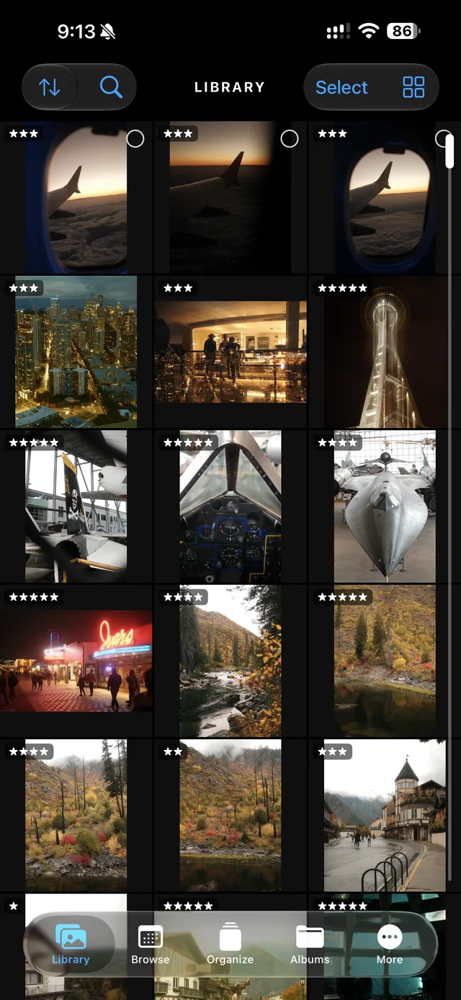
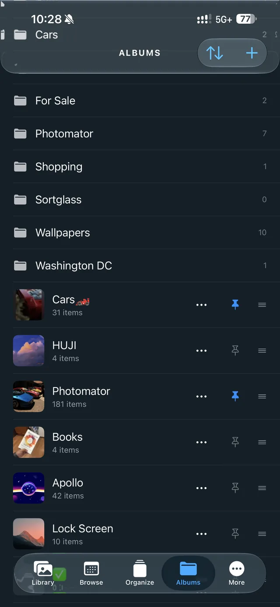
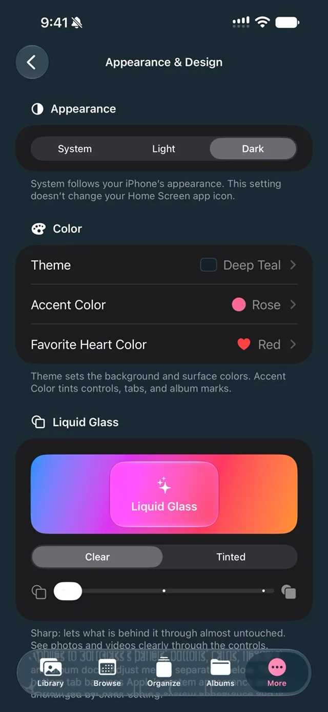

User Guide
Using SortGlass
Learn your way around SortGlass on iPhone, iPad and Mac. You can also open the guide from More in the app.
Getting started
SortGlass works on the Apple Photos library on your device. There’s no SortGlass account to create and nothing to import.
- Download SortGlass from the App Store. It supports iPhone with iOS 18 or later, iPad with iPadOS 18 or later, and Mac with macOS 15 or later and an Apple M1 chip or later.
- When asked, allow access to your photos. Review access later in More → Privacy & Photos Access, or in your device’s Settings (System Settings on Mac). Restricting access limits what SortGlass can show and organize.
- Choose what to organize in Browse, or go straight to Organize to start with everything.
Connected to Apple Photos. Favorites, album changes, ratings on supported systems, and confirmed deletions apply to your Photos library too. Sending an item to SortGlass Trash only queues it: you review and confirm before it’s deleted from Photos.
The five tabs
- Library: see the whole library, select in bulk, and revisit your rated photos.
- Browse: choose the photos and videos you want to organize.
- Organize: review one at a time. Favorite, rate, add to albums, or send to Trash.
- Albums: explore and manage your albums and folders.
- More: your settings, appearance, progress, and this guide.
Library
The bigger picture, all in one place.

See your full library
Browse your photos and videos, or search their camera, lens, file type and date details. Tap an item for a closer look.
Explore photo locations
Open a photo’s information panel to see its available metadata. If it has a saved location, tap the map to expand it, then turn on Nearby to explore other photos taken in that area. Only photos with location information and access granted to SortGlass can appear on the map.
Work with several at once
Select multiple items to send to Trash, add to an album, or favorite.
Choose your grid
Pinch to change the number of photos per row, and use the view options to adjust the layout. Larger screens can show more photos across. Favorite hearts and ratings can be shown on the grid.
Revisit your ratings
See rated photos again and compare your picks. Ratings require Pro and a supported system; on iPhone and iPad, that means iOS 27 or iPadOS 27 or later.
Browse
Choose a smaller set of photos and videos to work through.
All or Unsorted
Start with everything, or choose Unsorted for items that are not in an album.
Jump to a year
The year tiles show how many matching items were taken that year. Tap a year to start there in Organize.
Search photo details
Search by camera, lens, focal length, file type or date. Choose matching suggestions to narrow the results. With Pro, combine your search with filters and save combinations you use again.
Focus with Pro
Combine filters for favorites, media and file types, albums, dates, and ratings on supported devices. With Pro, you can also customize your filters and save named combinations to use again.
Choose how to review
Open the results in Library for a grid, or in Organize to review them one at a time.
Organize
Review one photo or video at a time, with your albums beneath it.
Swipe to keep moving
Swipe sideways to browse, down to favorite, and up to send a photo or video to Trash.
Give photos a home
Tap an album beneath the photo to add it. A colored album icon means it’s already there; tap again to remove it without advancing. Tap New to create an album or folder. A photo can belong to several albums.
Choose your strongest shots
With Pro on a system that supports ratings, tap Set Rating, then a star. Ratings save directly to your Apple Photos library, not just SortGlass. Revisit them in Library or filter them in Browse for a second pass. On iPhone and iPad, ratings require iOS 27 or iPadOS 27 or later.
Undo, redo, and inspect
The curved arrows undo and redo recent actions. History lets you revisit and undo your last 100 album and Trash actions. The information panel shows available camera and lens details, album membership, and a map for items with location information.
Albums
Everything in its place.

Browse and manage
Search for an album or folder, then open it to browse. Choose Organize Album when you want to review its contents one at a time.
Keep favorites close
Pin frequently used albums and folders to put them in Organize’s album row. Open a pinned folder right in the row. Use the Pinned view to find them quickly.
Arrange your workflow
Reorder your pinned albums to put the ones you reach for most first. In Albums, choose alphabetical sorting or your own order.
More
Make SortGlass work for you.

Set your preferences
Adjust app behavior and the way you organize.
Make it yours
Explore Appearance & Design, including preset and saved themes and custom colors. Pro unlocks additional themes, icons, colors, and launch styles.
Check search progress
Open Photo Search Index to see which items have been checked. Some files don’t contain camera or lens details. The optional Index with iCloud Photos scan can read missing details by downloading original photos, which can use storage, data and battery.
See your progress
Visit your dashboard for organization and cleanup statistics.
Come back anytime
You can always find the User Guide in More.
iPad, Mac and iCloud
Use a bigger screen
SortGlass supports iPad multitasking and runs on Apple silicon Macs as a Designed for iPad app. On iPad and Mac, use a mouse or trackpad to click-drag a selection, or Shift-click to select a range. Customize keys for Organize and the full-screen viewer in More → Keyboard Shortcuts.
Choose what syncs
In More → iCloud Sync, choose which settings to share between devices signed in to the same Apple Account: appearance, pinned albums and their order, goals, achievements, history, and keyboard shortcuts. Turn on the categories you want on each device. Your Organize position and SortGlass Trash queue stay on that device.
Photo search details have a separate optional sync setting in More → Photo Search Index. These settings are separate from iCloud Photos, which syncs changes to your Photos library according to your Apple settings.
Trash and deleting
Swiping up queues an item in SortGlass Trash. Nothing is deleted from your library at that point.
- Open Trash to review the queue. You can take items back out.
- Choose Delete. Your device asks you to confirm.
- Confirmed items move to Recently Deleted in Apple Photos, where Apple generally keeps them for up to 30 days unless you delete them sooner.
To recover something after deleting it, open the Photos app, go to Recently Deleted and choose Recover.
Free and Pro
SortGlass is free to download. The free version includes up to 100 Trash and Album actions each week; Favorites, Browse, and Undo are always included. The weekly count starts again every Monday at 00:00 UTC.
SortGlass Pro unlocks unlimited organizing, star ratings on supported systems, combined and saved filters, and every theme, app icon and accent color. Every Pro feature is included with any Pro subscription or the Lifetime purchase.
Restore a purchase
Open More → SortGlass Pro → Restore Purchases while signed in with the Apple Account you used to buy Pro.
Cancel a subscription
On iPhone or iPad, go to Settings → your name → Subscriptions. On Mac, open your account in the App Store and choose Subscriptions. See Apple’s cancellation instructions. Subscriptions renew automatically unless canceled at least 24 hours before the end of the current period. Deleting the app doesn’t cancel a subscription, and buying Lifetime doesn’t cancel an existing one.
Redeem an offer code
In SortGlass, open More → Redeem Code. On iPhone or iPad, you can also open the App Store, tap your account picture, then choose Redeem Gift Card or Code.
Need more help? Visit Support or email support@sortglass.com.